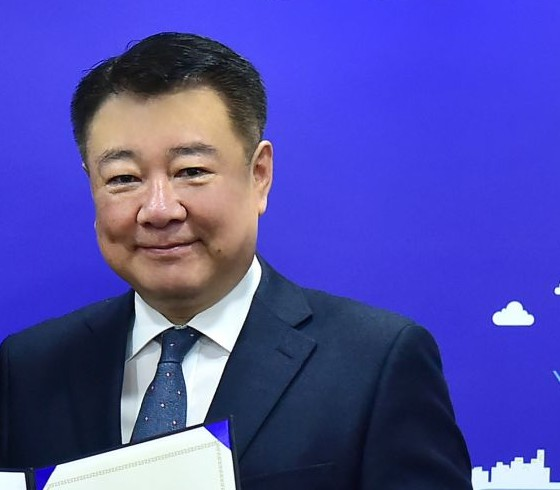
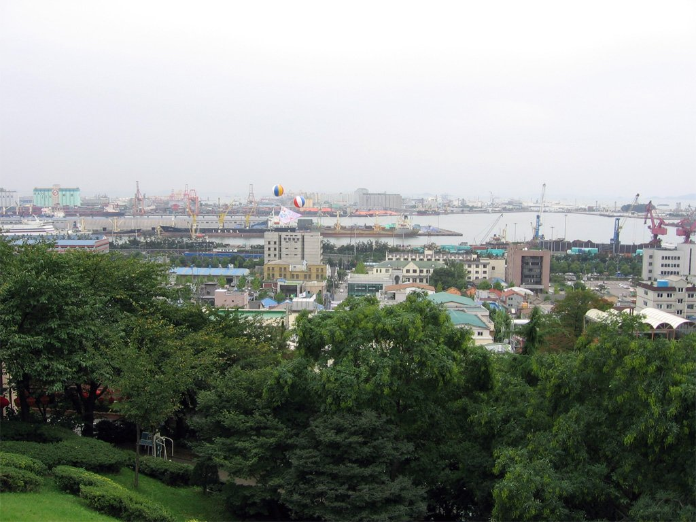

박인서 인천항만공사 사장 취임…"미해결 현안 푸는 해결사 되겠다"
내항 1·8부두 재개발, AI 오토밸리, 골든하버, 신항 1-2단계 4대 과제
대중국 물동량 64%…동남아·아프리카로 항로 다변화
골든하버 42만7657㎡ 매각 위해 업계 초청 설명회
AI경제저널=김갑봉 기자 | 인천항만공사(IPA)는 박인서(67) 제8대 사장이 2일 취임식을 열고 업무를 시작했다고 밝혔다. 임기는 2일부터 3년이다.

임명권자인 해양수산부(장관 황종우)는 지난 2일자로 박 사장을 임명했다고 밝혔다. 임기는 2029년 11월 1일까지다. 해수부는 박 사장이 대규모 도시개발 경험과 인천 지역경제 사업 경험을 바탕으로 인천신항 1-2단계 부두 자동화와 내항 1·8부두 재개발, 골든하버 투자유치를 속도감 있게 추진할 것으로 기대한다고 설명했다.
취임식은 연수구 송도동 IPA 사옥에서 열렸다. 박 사장은 "역대 사장님들이 남기신 발자취는 깊이 존중하되, 오랫동안 풀리지 않았던 미해결 현안들은 빠르게 정리하고 풀어내는 '해결사'가 되겠다"고 말했다.
4대 과제 제시
박 사장은 우선 추진할 과제로 네 가지를 꼽았다. 내항 1·8부두 재개발사업의 내실 있는 추진, AI 오토밸리 사업 활성화와 골든하버 가치 제고를 위한 투자유치 전략 수립, 인천신항 1-2단계 스마트 부두의 적기 개장, 항로·물동량 다변화를 통한 자생력 강화다.

내항 1·8부두 재개발은 인천시민의 20년 숙원 사업이라고 했다. IPA는 이 사업이 민선9기 인천시정 「제·문·부 프로젝트」의 출발점이라고 설명했다. 박 사장은 세계적인 친환경 재개발의 모범 사례로 만들겠다고 밝혔다.
인천시가 지난해 10월 15일 밝힌 사업계획을 보면 내항 1·8부두 재개발에는 2028년까지 5906억원이 들어간다. 사업시행자가 5623억원, 재정이 283억원을 맡는다. 복합도심지구와 문화복합시설, 관광시설, 공원을 조성한다.
이 사업은 2007년 시민 청원으로 시작됐다. 인천시와 인천항만공사, 인천도시공사가 꾸린 인천시컨소시엄이 사업을 맡았고, 인천시는 지방정부가 직접 사업시행자로 참여한 전국 첫 항만 재개발이라고 설명했다.
오랫동안 답보 상태인 AI 오토밸리 사업은 조속히 활성화 궤도에 올리겠다고 했다. 골든하버 미매각 토지는 가치를 높이는 투자유치 전략을 찾아 조기 매각 구조를 완성하겠다고 밝혔다.
국내 첫 U자형 부두인 인천신항 1-2단계 컨테이너 부두는 운영사와 협력해 제때 개장하겠다고 했다.
대중국 물동량 64%
박 사장은 인천항이 2024년 사상 최대인 355만TEU의 컨테이너 물동량을 기록해 국내 2위 컨테이너 항만이 됐다고 평가했다. 5년 연속 중대재해 「제로」를 달성했다고도 했다.
다만 미·중 무역갈등 같은 교역 환경의 불확실성과 인공지능 기반 스마트 항만을 둘러싼 글로벌 항만 간 경쟁을 과제로 꼽았다. 대중국 물동량 비중이 64%에 이르는 구조를 넘어서기 위해 동남아와 아프리카 같은 신흥시장 물동량을 끌어오겠다고 밝혔다.
박 사장은 취임식 직후 내항 1·8부두 재개발 현장과 인천항 갑문시설을 찾았다. 박 사장은 "안전은 항만 운영과 건설현장에서 어떠한 경우에도 양보할 수 없는 최우선 가치"라고 말했다.
골든하버, 업계 초청 설명회
IPA는 박 사장 취임 사흘 전인 지난달 30일 부동산·개발업계를 불러 「골든하버 투자유치 현장 초청설명회」를 열었다고 1일 밝혔다. 부동산 개발사와 컨설팅 기업, 투자 자문사 등 25곳 안팎이 참석했다.
IPA가 매각을 추진하는 골든하버 복합지원용지는 연수구 송도동 300-5번지 일원 11개 필지, 42만7657㎡(약 12만9000평)의 일반상업용지다. 송도국제도시 안에 있고 항만법상 2종 항만배후단지다.
IPA는 이곳에 수변 관광·레저와 업무·문화·상업 기능을 묶은 해양문화관광단지를 조성할 계획이다. 앵커시설로 테르메 웰니스 스파리조트를 추진하고 있다.
박 사장은 인천 출신으로 1985년 한국토지주택공사(LH)에 입사해 인천지역본부장을 지냈다. 이후 인천도시공사 사장, 인천시 균형발전정무부시장, 인천상공회의소 상근부회장을 거쳤다.
참고문헌
- "인천항만공사 제8대 사장에 박인서 씨 임명", 해양수산부, 2026.11.2., https://www.korea.kr/briefing/pressReleaseView.do?newsId=156787524
- "박인서 IPA 제8대 사장 취임, 첫날부터 현장경영 본격화", 인천항만공사, 2026.11.2., https://www.icpa.or.kr/article/view.do?articleKey=33028&boardKey=217&menuKey=3996
- "인천항 내항 1‧8부두 재개발, 사업계획 확정·고시", 인천시, 2025.10.15., https://www.incheon.go.kr/IC010205/view?repSeq=DOM_0000000013277997
- "인천항만공사, 부동산·개발업계 초청 골든하버 투자유치 현장 설명회 개최", 인천항만공사, 2026.11.1., https://www.icpa.or.kr/article/list.do?menuKey=3996&boardKey=217
[사진 출처]
- [사진1] 인천광역시 인천 인터넷방송 포토시정 「박인서 균형발전정무부시장 임용」, 2019.12.30., https://www.incheon.go.kr/intv/TV010201/2663733 (부분 확대)
- [사진2] IGEL, "Port of Incheon.jpg", 위키미디어 공용, 퍼블릭 도메인, https://commons.wikimedia.org/wiki/File:Port_of_Incheon.jpg
관련기사
- 인천 10월 소비자물가 2.7% 올라…외식 뺀 개인서비스는 4.0%로 수도권 최고
- 인천시, 천원택배 운영·배송체계 일원화…무인 집화·간편결제 도입
- 누적 수출 9000억 달러 첫 돌파…인천 비중은 5.1%로 낮아져
- 인천신용보증재단, 소상공인 495억원 협약보증 2일부터 접수
저작권자 © AI경제저널 무단전재 및 재배포, AI학습 및 활용 금지